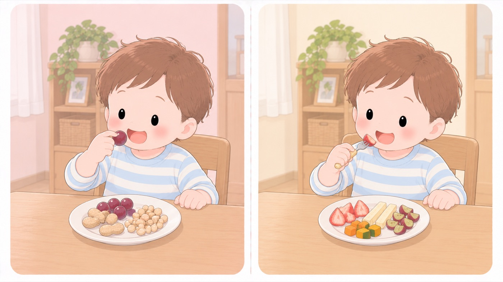

食品による窒息は、まだ続く
硬い豆やナッツ類は、5歳以下には食べさせない
食べられるものが増える時期ですが、消費者庁は硬い豆やナッツ類を5歳以下の子どもには食べさせないでくださいとしています。
食品の誤嚥食べものや飲みものが、食道ではなく気管のほうへ入ってしまうこと。による窒息で亡くなった14歳以下80人のうち、73人（約9割）が5歳以下でした。この年齢は、まだ「5歳以下」の範囲に入っています。

- しないこと：豆・ナッツ類は5歳以下には与えない
小さく砕いても、気管に入ると肺炎や気管支炎を起こします。節分の豆まきは個包装のものを使い、拾って口に入れないよう後片づけまで行います。
- しないこと：ミニトマト・ぶどうを、丸ごと出さない
消費者庁は、球形の食品は吸い込みによる窒息の原因になるため4等分にするよう挙げています。この年齢でも対象から外れません。
- しないこと：こんにゃく入りゼリーは、与えない
消費者庁の食品SOS対応プロジェクトは、2010年に窒息事故の再現試験を行っています。そこで示されたのは、一口サイズで吸い込める容器に入っていて、弾力が強く噛み切れない食品は、のどに覆いかぶさる形で気道を完全にふさぎ、咳や腹部突き上げ法後ろから抱えて、みぞおちの下を手前上方へ突き上げる方法。1歳以上で使い、1歳未満には行わない。（ハイムリック法）で取り出すのが極めて困難だという所見です。多くのこんにゃく入りゼリーが、この二つを併せ持つと指摘されました。
同じ報告は、救急搬送データで12歳以下が被害者だった窒息事故を調べ、重症以上になった食品としてこんにゃく入りゼリー・カップ入りゼリー・あめを挙げています。集めたデータの範囲では、こんにゃく入りゼリーによる事故はすべて重症以上でした。そばに人がいた事案でも重症以上の被害が出ていて、応急措置の効果は限定的だとされています。
報告は、従来と同様の警告表示や注意喚起にとどまらず、商品の形状や物性に踏み込んだ改善を講ずることが望ましいと判断しています。小さく切って見ているだけでは足りない、という意味です。
- しないこと：ゼリーのカップを、子どもに持たせない
日本小児科学会の傷害速報には、1歳4か月の子がミニカップゼリーの透明なプラスチック容器そのもの（高さ2.5cm・最大直径4.8cm）を誤嚥食べものや飲みものが、食道ではなく気管のほうへ入ってしまうこと。した事例があります。いつも親がスプーンですくって食べさせていたのに、その日は兄と同じように自分でカップを持ちたがったので、カップごと手渡したのがきっかけでした。
この子は、母親がすぐに逆さまにして背中を叩いたため容器が出てきています。委員会は、直ちに初期対応がなされた事例以外はほぼ全例が重篤な後遺症を残すか死亡していると書いています。偶然に頼れる話ではありません。
委員会は、カップの形を変えても、一口サイズの製品である限り口に容器をくわえて食べる食べ方は変わらないとしています。ヨーロッパ連合は、こんにゃく入りでなくても、一口サイズで口のなかに押し込むタイプのゼリー製品すべてを流通させないよう法的に規制しています。
- すること：もち・白玉・だんごは、小さく切ってそばで見る
同じ再現試験では、もち・だんご・こんにゃくでも噛み切りにくさが観察されました。ただしもちは口のなかで滑りにくく、こんにゃく入りゼリーよりリスク要因は少ないとされています。切って与え、食べ終わるまでそばにいます。
- すること：かみ切りにくいものは、1cm大まで小さくする
消費者庁は、パン、カステラ、こんにゃく、きのこ類、海藻類、ゆで卵、肉などを1cm大程度まで小さくして与えるよう求めています。
- すること：座って、落ち着いて食べさせる
食べながら走る・笑う・驚かせるのを避けます。
- すること：詰まったときの対処を、家族全員が知っておく
背部叩打法赤ちゃんをうつぶせに乗せて頭を低くし、背中の真ん中を手のひらの付け根で続けて叩き、詰まったものを出す方法。と腹部突き上げ法後ろから抱えて、みぞおちの下を手前上方へ突き上げる方法。1歳以上で使い、1歳未満には行わない。。119番通報をためらいません。
のどに詰まるのではなく、中毒を起こすもの ── ぎんなん
日本中毒情報センターは、ギンナンについて小さな子どもには食べさせないようにしましょうとしています。有毒成分の4'-O-メチルピリドキシンによって、嘔吐やけいれんなどの中毒症状が出ることがあります。中毒110番には、秋になるとギンナンに関する相談が増えます。
大津市保健所は、この有毒成分は熱に強く、加熱調理しても消えないため、調理方法に関わらず食べる数を控えめにするよう求めています。ゆでても焼いても減らないので、ナッツや枝豆と同じ感覚で多量に食べさせないようにします。
中毒は5歳以下の子どもで多く報告されていて、6、7個でけいれんが出現した5歳以下の例があります。なりやすさは食べた人の潜在的なビタミンB6の欠乏状態によって異なるため、「何個までなら大丈夫」とは一概に言えないとされています。食べて嘔吐やけいれんなどの症状が出たときは、医療機関を受診します。
🛍 グッズの選び方
PR- ミニトマトやぶどうは縦に4つに切ります。輪切りにすると、気道をふさぐ形のまま残ります。はさみがあると、外食先でもその場で切れます。
- 刃がケースに入って持ち歩けるものを選びます。使う場面は、家よりも外のほうが多くなります。
- 誤飲チェッカーは、口に入る大きさの目安（直径39mm）を測る筒です。食品以外にも、拾って口に入れる物の判断に使えます。
- 詰まったときの対処は、紙で手元に置ける形にしておきます。その場でスマートフォンを調べる時間はありません。
- コンビ ベビーレーベル お肉も切れるフードカッター（7か月頃〜）🏅 第9回キッズデザイン賞 審査委員長特別賞Amazonで見る →（新しいタブで開きます）
- リッチェル サクッと切れる離乳食はさみ（ケース付）食器を傷つけない刃。皿の上で切れるAmazonで見る →（新しいタブで開きます）
- GREEN BELL 匠の技 ベビー用フードカッター（ケース付き）ケース付き。持ち歩けるAmazonで見る →（新しいタブで開きます）
- 誤飲チェッカー39mmの円筒。詰まる大きさをその場で測れるAmazonで見る →（新しいタブで開きます）
- 子どもの病気・救急 ぜったい これ知ってて！救急にかかる判断を、症状別にAmazonで見る →（新しいタブで開きます）
リンクはAmazonアソシエイトリンクです。当サイトはアフィリエイトプログラムに参加しています。Amazonのアソシエイトとして、当サイトは適格販売により収入を得ています。 選び方の方針
動画で見る
この項目の根拠
- 食品による子どもの窒息・誤嚥(ごえん)事故に注意!—気管支炎や肺炎を起こすおそれも、硬い豆やナッツ類等は5歳以下の子どもには食べさせないで—（消費者庁）（新しいタブで開きます）
豆やナッツ類など硬くてかみ砕く必要のある食品は5歳以下の子どもには食べさせないこと。細かく砕いても気管に入ると肺炎や気管支炎のおそれがあること。2014〜2019年の6年間に食品による窒息で14歳以下80人が死亡し、うち73人（約9割）が5歳以下であったこと。 - 子どもを事故から守る！事故防止ハンドブック（消費者庁・PDF）（新しいタブで開きます）
球形の食品は吸い込みにより窒息の原因となるため4等分にすること。パン、カステラ、こんにゃく、キノコ類、海藻類、ゆで卵、肉などは1cm大程度まで小さくして与えること。 - 食品SOS対応プロジェクト報告 —こんにゃく入りゼリーを含む食品等による窒息事故リスクの低減に向けて—（平成22年7月16日・消費者庁・PDF）（新しいタブで開きます）
こんにゃく入りゼリーによる窒息死亡事故が、当該商品の新規開発以降22件確認されていること。平成18〜20年の救急搬送データ（食品約4,000件）の分析で、12歳以下の子どもが被害者である場合に重症以上の被害が発生した食品として、こんにゃく入りゼリー、カップ入りゼリー、あめ等が抽出され、こんにゃく入りゼリーによる事故はすべて重症以上であったこと。救急要請内容からバイスタンダーによる応急措置結果を調べたところ、その効果は限定的で、応急措置の有無によらず重篤な事故が発生する傾向が強い食品もあると考えられ、こんにゃく入りゼリーによる窒息事故の追跡調査でもバイスタンダーが存在した状況で重症以上の被害が発生していた事案が複数確認されたこと。信州大学による口腔模型等を用いた再現試験で、破断試験では多くのこんにゃく入りゼリー、もち、こんにゃく、だんご等で噛み切りにくさが、閉塞試験では多くのこんにゃく入りゼリー、もち、一部のカップ入りゼリーで強い気道閉塞が観察されたこと。試験を担当した研究者から、①一口サイズで吸引する可能性がある容器に入っている食品で、②弾力性が高く破断されにくい食品は、咽頭に覆い被さる形で気道の完全閉塞を起こし、咳やハイムリック法等の異物除去が極めて困難であり、①・②を併せ持つ食品は重篤な窒息事故を起こすリスクが高いとの所見が示されたこと。窒息頻度が高いもちやあめについては、もちは口腔内での滑りやすさが低く、あめは強い気道閉塞を生じさせにくい点で、こんにゃく入りゼリーよりもリスク要因が少ないことが示唆されたこと。こんにゃく入りゼリーによる窒息事故リスク低減のためには、従来と同様な警告表示や注意喚起にとどまるのではなく、商品の形状、物性等に踏み込んだ改善を講ずることが望ましいと判断されること。 - 傷害速報 No.56 ミニカップゼリーのプラスチック容器の誤嚥による窒息疑い（日本小児科学会・PDF）（新しいタブで開きます）
1歳4か月の男児が、ミニカップゼリーの透明なプラスチック容器（高さ2.5cm、最大直径4.8cm）を誤嚥し窒息が疑われた事例。いつもは母がスプーンでカップからゼリーをすくって食べさせていたが、兄と同様に自分でカップを持って食べたがったためカップごと手渡し、兄弟2人だけで食べさせていたこと。咳に気付いて逆さまにして背中を叩いたところ容器が排出され、発生直後に初期対応を行わなかった場合は長時間の窒息が続き重篤化していた可能性があったと考えられること。過去の傷害速報で異物を誤嚥した事例は、直ちに初期対応がなされた事例以外はほぼ全例が重篤な後遺症を残すか死亡していること。カップ（容器）そのものが口のなかに入らない工夫が必要だが、カップを変えても一口サイズの製品である限り口に容器をくわえて食べる食べ方を変えることは難しく、根本的な解決は困難であること。ヨーロッパ連合では、一口サイズで口のなかに押し込むタイプのゼリー製品は、すべて誤嚥のリスクがあるため、こんにゃく入りでなくても全面的に流通しないよう法的に規制されていること。 - ギンナンの食べ過ぎに注意しましょう！（公益財団法人 日本中毒情報センター）（新しいタブで開きます）
ギンナンはイチョウの種子で、一度に食べ過ぎると有毒成分である4'-O-メチルピリドキシンにより嘔吐やけいれんなどの中毒症状が出現することがあること。中毒110番では秋になるとギンナンに関する相談が増加すること。事故防止のため、小さな子どもにはギンナンを食べさせないようにし、大人でも食べ過ぎには注意すること。 - 食の安全安心情報「ギンナンは食べすぎないで！」（大津市保健所衛生課・PDF）（新しいタブで開きます）
ギンナンを一度にたくさん食べすぎると嘔吐やけいれんなどの中毒症状を起こすことがあること。ギンナンでの中毒は食べた人の潜在的なビタミンB6の欠乏状態によりなりやすさが異なるので、「何個までなら大丈夫」と一概には言えないこと。ギンナンの有毒成分は熱に強く、加熱調理しても消えないため、調理方法に関わらず食べる数は控えめにし、ナッツや枝豆と同じ感覚で多量に食べないようにすること。ギンナン中毒は5歳以下の子どもで多く報告されており、6、7個でけいれんが出現した5歳以下の小児の例があり、小さな子どもにいくつも食べさせるのは控えた方が無難であること。ギンナンを食べて嘔吐やけいれん等の症状が出た場合は医療機関を受診すること。
関連キーワード窒息詰まらせた豆ナッツ節分あめぶどうもち餅白玉こんにゃくゼリーカップゼリーぎんなん銀杏ギンナン中毒